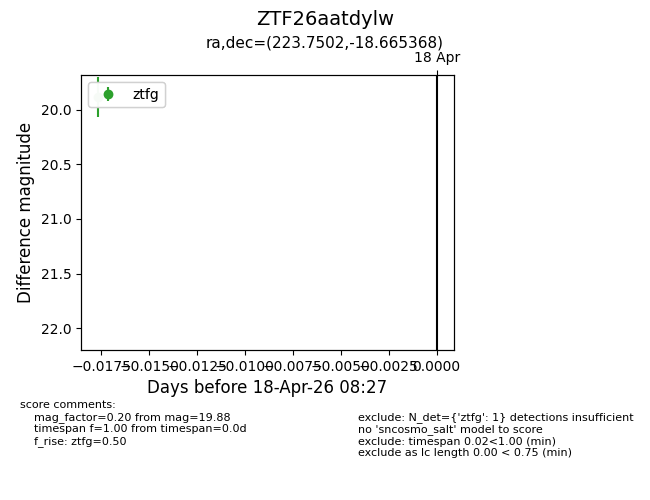
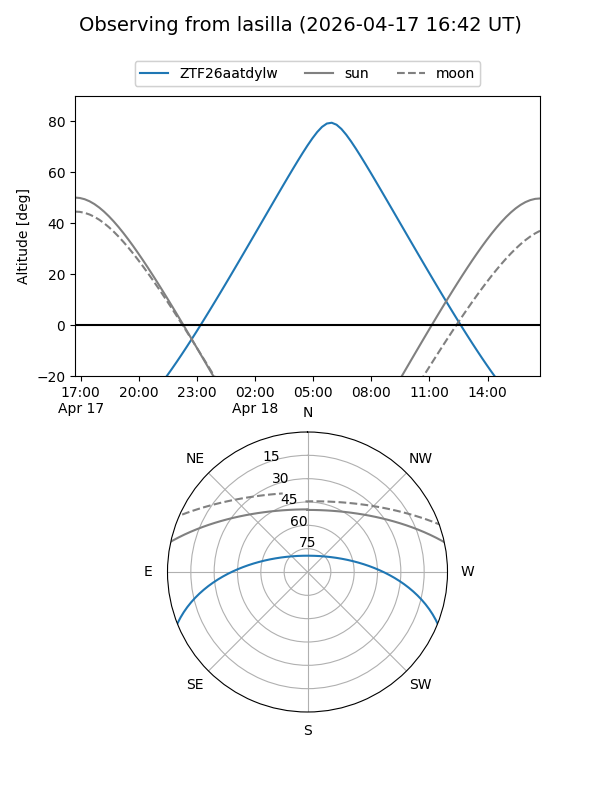
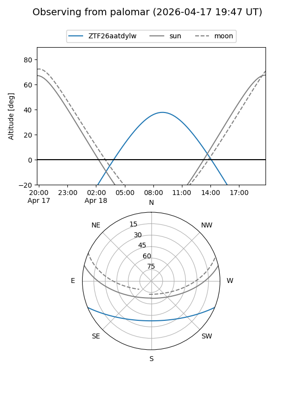

ZTF26aatdylw
Target ZTF26aatdylw at 2026-04-18 08:33
Aliases and brokers:
FINK: link
Lasair: link
ALeRCE: link
alt names
ZTF26aatdylw (ztf,fink_ztf)
Coordinates:
equatorial (ra, dec) = 223.7502,-18.66537
equatorial (HMS+DMS) = 14:55:00.04,-18:39:55.33
galactic (l, b) = (339.5061,+35.28464)
Flags:
Photometry:
last ztfg=19.88
1 ztfg detections
Lightcurve

Visibility


Additional plots